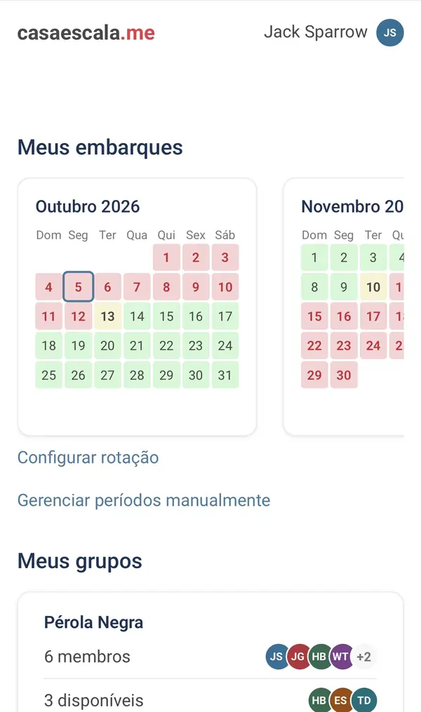
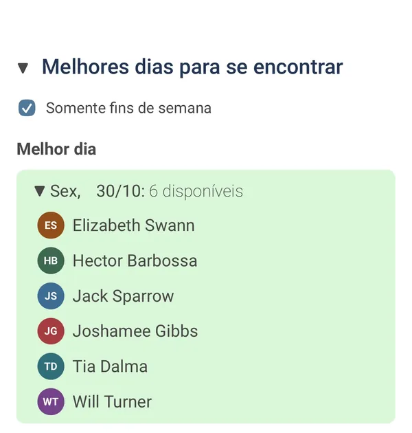

Projects
Casa Escala
Shift-rotation scheduler for offshore crews
Casa Escala finds and ranks the dates that work best for a group
to meet, based on everyone’s offshore work rotations. It is a Go
monolith with server-rendered pages, SQLite with streaming
backups, and Google or email sign-in. It has 92 users as of
October 2026, and about 480 tests run in CI against a real
database.
UI in Brazilian Portuguese, built for Brazilian offshore crews.


Jellyfin Home Server
Self-hosted media server on a repurposed laptop
An old Dell laptop became a hardened Windows 11 media server for
the home network, with nothing exposed to the internet. Jellyfin
and automated media management run as low-privilege services,
with downloads behind a VPN kill switch and admin access over
key-only SSH. 11 decision records and 8 incident write-ups
document the build, and CI runs shellcheck, PSScriptAnalyzer and
secret scanning.
More projects on GitHub
Experience
Systems Developer (Co-op) · HOOPP (Healthcare of Ontario
Pension Plan)
May 2025 – Dec 2025 · Toronto
-
Built production PowerShell automations on Azure Function Apps
and Automation runbooks, including permission audits for
sensitive SharePoint folders and mailbox-health alerts.
-
Set up RingCentral API access with scoped roles and a JWT
service account, so another team could pull call logs into
Azure Data Factory.
-
Administered Microsoft 365 and corporate telephony, and
resolved staff support requests.
-
Rolled out Copilot Studio and agents across the organization,
and trained staff to use them.
Before tech: ship pilot for 5 years on offshore subsea and cargo
vessels, Rio de Janeiro (2019 – 2024).
How I Work
I build with Claude Code, and the whole setup is public in
agent-workflow. Every feature starts as a written plan that I question until
the design is settled. Logic that matters is written test-first.
Each pull request goes to three review agents, and a fourth checks
their findings against the code before I see them. A hook blocks
direct pushes to main, so every change goes through
review. A new tool stays only if it passes a two-week productivity
check recorded in the repo.
This site was planned the same way:
spec.
About
I spent five years as a ship pilot, holding vessels in position
during offshore subsea operations. Writing PowerShell scripts to
automate compliance work on board is what pulled me into software.
I left that career to study Computer Programming at Seneca
Polytechnic in Toronto, where I made the President’s Honour List
twice. In 2026 I also mentored six new Seneca students through the
Peer Mentoring program.